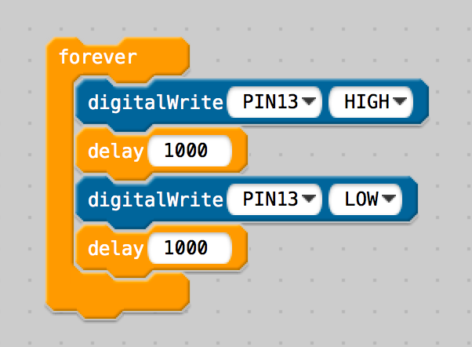
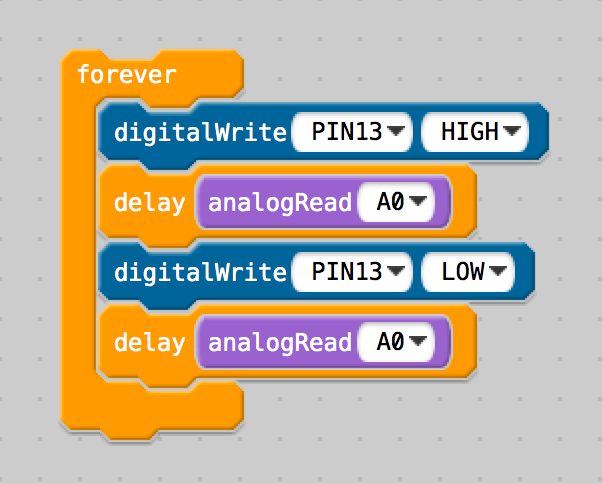

CSCI 150 - Lab 4
Arduino Circuits
Overview
Materials
Description
 Vital to any computer is the connection with the real world, through
input and output channels. Through building electronic circuits and programming
an Arduino, we open a brief window into the lower-level operations of a computer.
Vital to any computer is the connection with the real world, through
input and output channels. Through building electronic circuits and programming
an Arduino, we open a brief window into the lower-level operations of a computer.
Step 1
In the Sparkfun Inventor's Kit Guide, read pages 4 and 12-19 for an overview of how
the Arduino is structured, what a breadboard is, and some of the components available
to us for building our projects.
Step 2
Our first project is to create a blinking light. This demonstrates
how the Arduino can generate output for the user. Follow the guide to build this
circuit on the breadboard.
- Circuit 1 - Blinking Light, pg 21-22-23, 26
The code shown in the Guide is for a different language, we will be using a
scratch-like interface called ModKit. Once you select your Arduino Board,
on the left, you will see blocks for programming. Assemble the programming blocks
so that the PIN13 is alternately HIGH and LOW every 1000 milliseconds. Your code should
look like this.

Press the play button to upload your code to the Arduino. The middle banner should
eventually turn green, and you should see your LED blinking.
Now, modify this code to make the LED blink like it has a heartbeat, where there is a
short pulse of light followed by a longer one.
Step 3
We next explore how to wire up input into the Arduino. We will use a twisting knob
called a Potentiometer. Follow the guide to build this circuit.
- Circuit 2 - Potentiometer, pg 27-30
Be sure to use an analog pin for input from the potentiometer.
Alter your earlier code from Step 2 so that the speed of the blink is now
controlled by the input value from the potentiometer. Your code should
look like this.

Now that you understand analog input, we can also explore analog output.
Certain pins on the Arduino have a ~ next to their number, in particular
3, 5, 6, 9, 10 and 11. Can you alter your circuit and code such that the LED
is on one of these ~ pins, and use an analogWrite block to set the intensity
based on the potentiometer?
Step 4
Our LED above was either ON or OFF, but is now adjusted to be more or less intense
by the potentiometer. We can explore this further with the RGB LED, where we
independently control the intensity of the Red, Green and Blue portions of a light.
Follow the guide to build this circuit.
- Circuit 3 - RGB LED, pg 31-35
Use your knowledge of the analogWrite block to write code for this circuit. The
intensity of each piece of the RBG LED should be a number
between 0 and 255. Demonstrate
that it can display Red, Green and Blue independently.
Find a hex color code from the internet. Translate this into decimal, and use
this code in your program. How similar is the color to what you expect?
Step 5
You are now ready to explore the other pieces available. Choose at least three of the
circuits listed below, and demonstrate them working to complete this lab.
- Circuit 5 - Push Button, pg 39-42
- Circuit 6 - Photo Resistor, pg 43-46
- Circuit 8 - Servo, pg 51-54
- Circuit 9 - Flex Sensor, pg 55-58
- Circuit 12 - Motor, pg 67-70
What to Hand In
You will need to demonstrate
your working circuit implementations to the instructor for credit.
Grading
- To earn a D, demonstrate a blinking LED circuit
- To earn a C, do the above and demonstrate a potentiometer circuit
- To earn a B, do the above and demonstrate an RGB LED
- To earn an A, do the above and demonstrate 2 circuits in step 5
- To earn a 100, do the above and demonstrate 1 additional circuits
© Mark Goadrich, Hendrix College